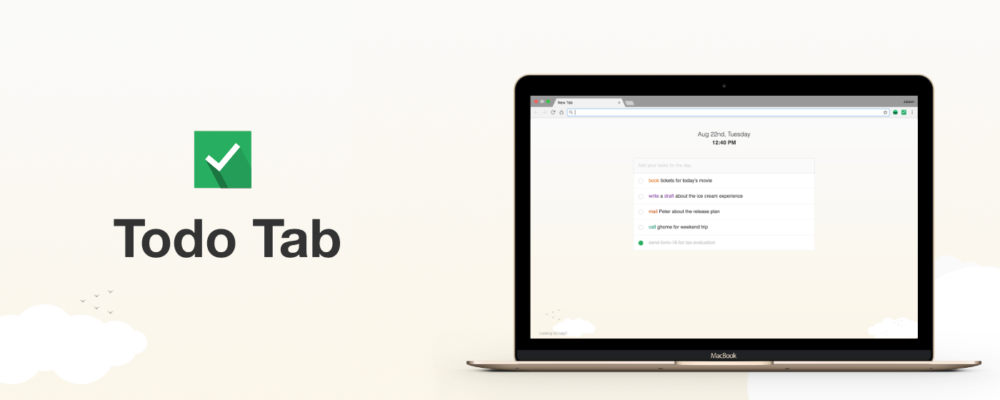

Updating Todo Tab to v2.0.0
03 Dec 2017
I'm so happy to announce a new version of Todo Tab released on 27th November with more productivity helpers.
What's new? 🎉
-
One of the most awaited and requested feature, the ability to create and manage custom colour codes

- You can reorder your task list as you wish
- If you made a typo mistake while adding the task, now you can edit the description, no more delete and re-entering
- Shows the remaining task count in tab title
- If you have more than two completed task, todo tab will hide the rest and keep the todo list always small
- Made URLs shorten and clickable in the task description
- If you have more than five completed task, todo tab will give you the option to clear all completed task in one go
Technical Update
Introduced React JS to write UI components faster and speed up prototyping.
* * *

Get ExtensionThe extension is currently available only for Chrome. But no worries, all other platforms including mobile are on the roadmap.
* * *
Thank you for reading. If you have any questions, feel free to mail me.
Have a Nice Day!